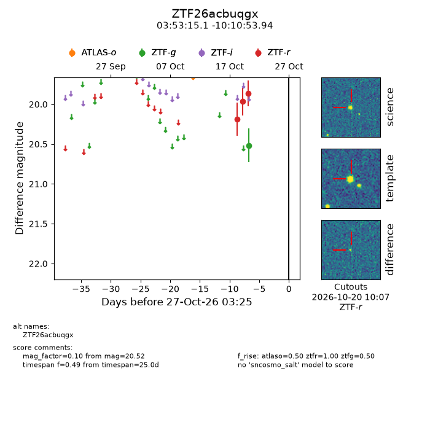
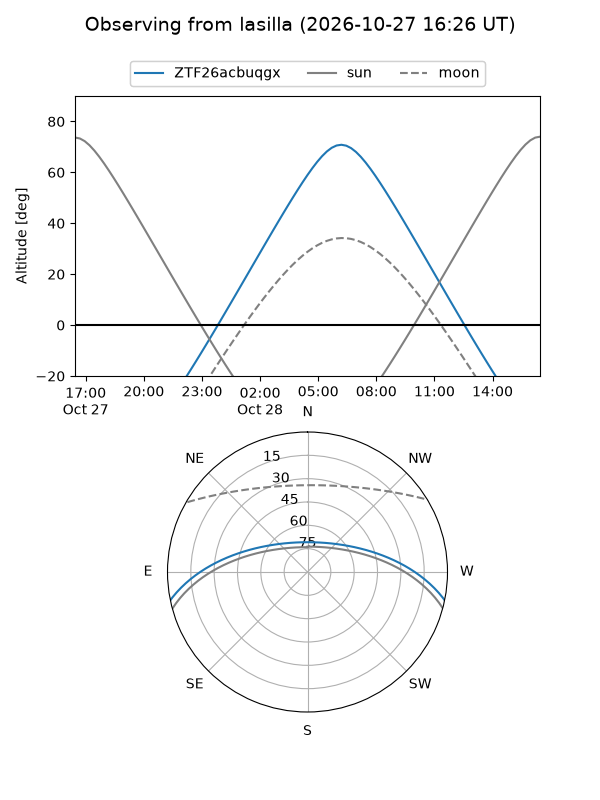
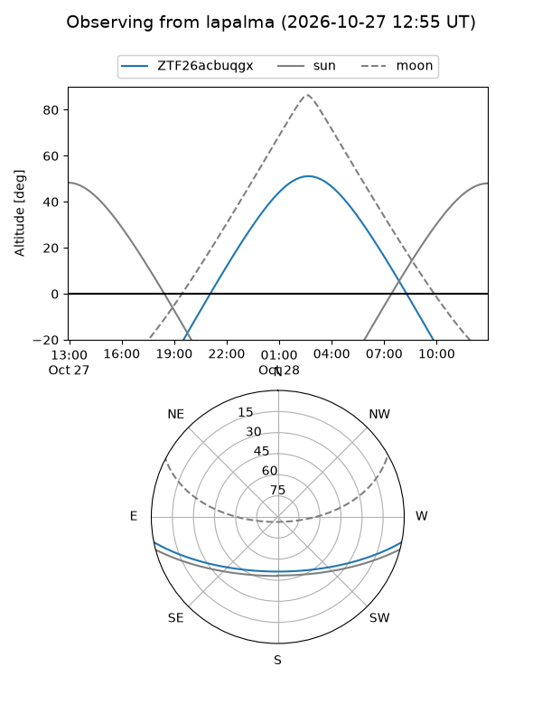
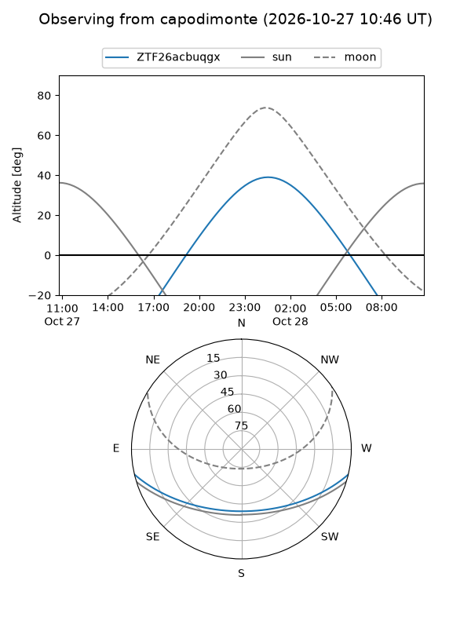
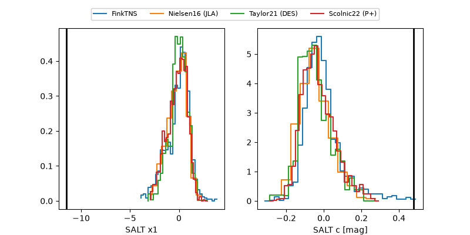

ZTF26acbuqgx
Target ZTF26acbuqgx at 2026-10-27 15:18
Aliases and brokers:
FINK-ZTF: ztf.fink-portal.org/ZTF26acbuqgx
Lasair-ZTF: lasair-ztf.lsst.ac.uk/objects/ZTF26acbuqgx
ALeRCE-ZTF: alerce.online/object/ZTF26acbuqgx
Direct TNS query: direct search
alt names
ZTF26acbuqgx (ztf,fink_ztf)
Coordinates:
equatorial (ra, dec) = 58.3131,-10.18165
equatorial (HMS+DMS) = 03:53:15.14,-10:10:53.94
galactic (l, b) = (200.2766,-44.03416)
Flags:
peak dt:
Photometry:
last atlaso=nan, ztfg=20.52, ztfr=19.86
1 atlaso, 1 ztfg, 3 ztfr detections
Lightcurve

Visibility



Additional plots
